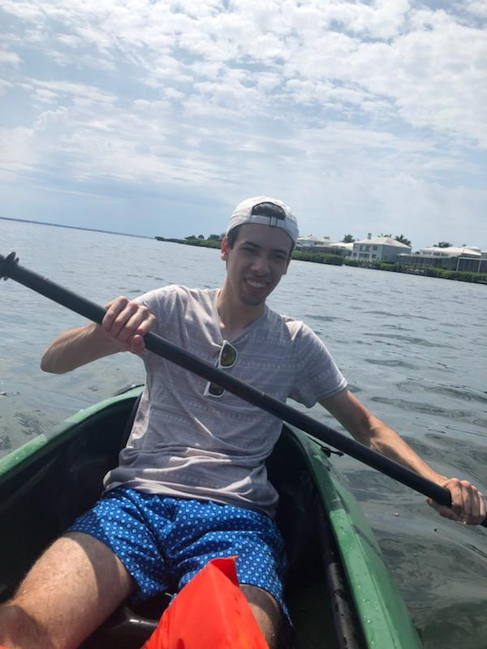
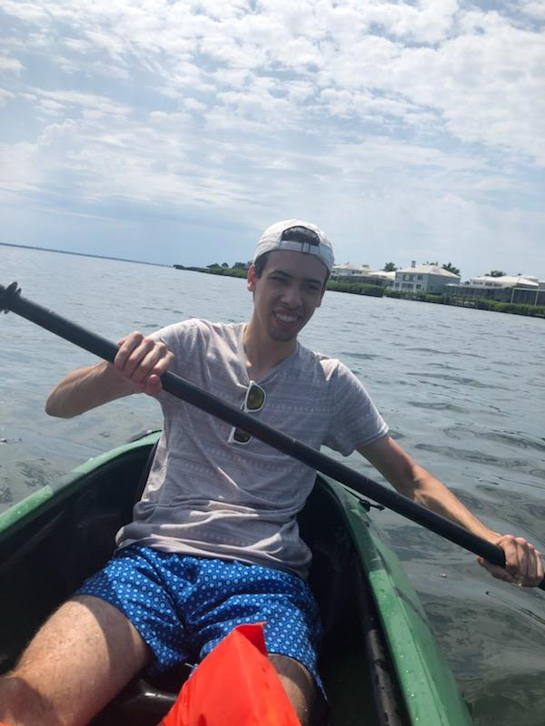

New Jersey | USA | 24 | male | web developer and bass player. Looking for work! - business email: elijahbrandao@gmail.com.
After high school I attended Brookdale Community College located in Lincroft, New Jeresy. I initially aimed to major in nursing but pivoted to business administration. I then went to Rutgers Univerisity. At Rutgers I majored in information technology and decided I would aim my career path tpwards web development.

My hobbies include playing the bass guitar, practicing code, spending time with my friends, and reading. I started playing bass around 2 years ago. I was introduced to the instrument through my local church where I went on to play for the worship service.

As for future goals I aim to become a web developer for an organization where I can create, maintain, and update company or client websites. Half way through my academic career at Rutgers I discovered web development and have been pursuing it ever since. I am currently in the Dev Mountain web development cohort where I am striving to achieve this goal of mine.